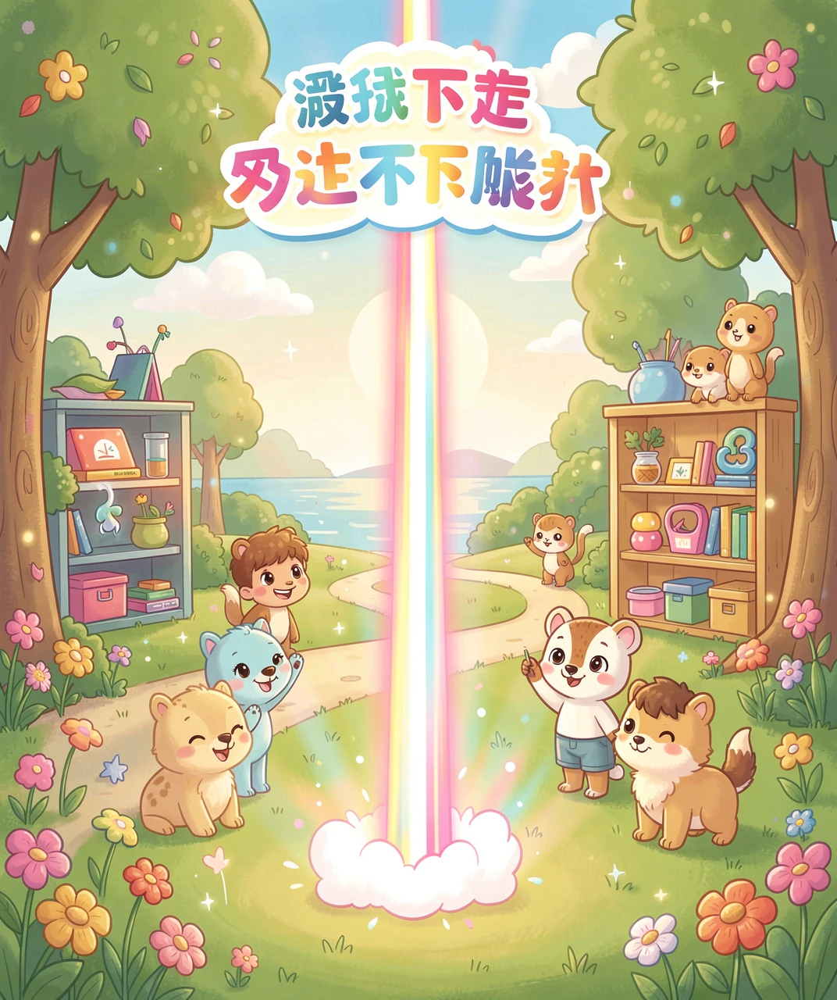
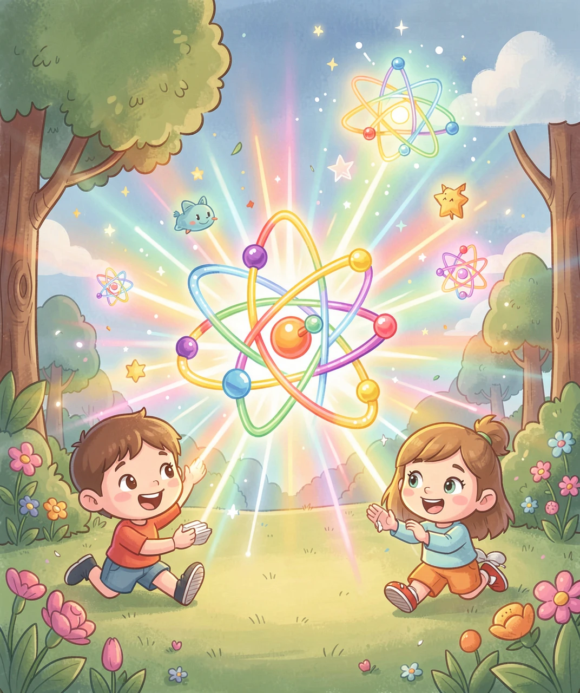
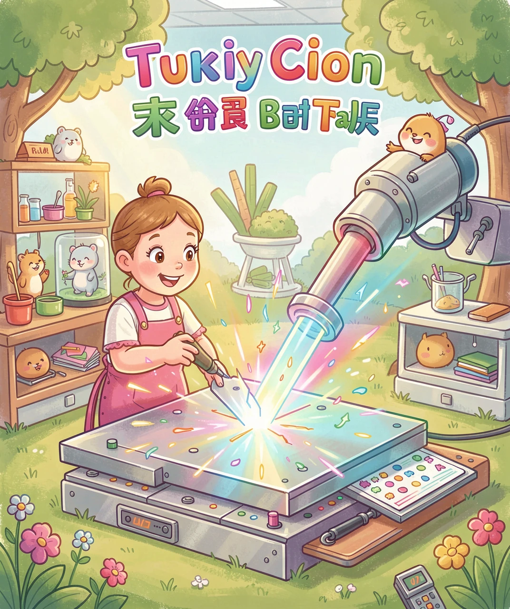
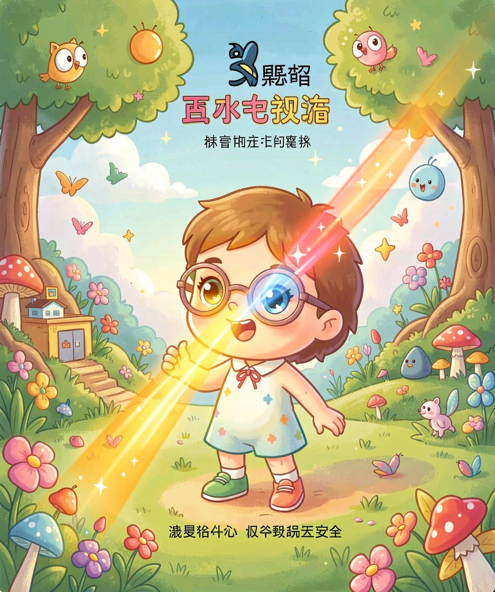

最亮、最直、最「专一」的光
你玩过手电筒吗？打开手电筒，光会照出去，但越照越远，光斑就越大、越模糊，最后散成一片。你有没有想过，世界上有没有一种光，能一直「抱成一团」，走多远都不散开，又直又亮？
有的！这种光，就是激光。激光的英文名叫「Laser」，它其实是一句很长的话的缩写，意思是「受激辐射的光放大」。听起来很复杂，但你可以先记住一件事：激光是世界上最特别的光——它又亮、又直、又「专一」。
普通的光，像一群人在操场上各跑各的方向；而激光，像一群训练有素的士兵，排着整齐的队伍，朝同一个方向、迈着一样的步子前进。所以激光才能照得那么远，亮得那么厉害。今天，我们就来认识这道神奇的光。

要弄懂激光，我们得先搞清楚：光到底是什么？
光是一种波，就像水面上的一圈圈波纹。太阳光、灯光、手电筒的光，都是由无数种不同「波长」的光混在一起的。波长不同，颜色就不同——红光、橙光、黄光、绿光、蓝光、紫光，还有我们眼睛看不见的紫外线和红外线，都是不同波长的光。
普通的光，波长很杂、方向很乱，就像一锅「大杂烩」。而激光不一样，它通常只有一种波长，也就是只有一种颜色，而且所有的光波都「步调一致」，朝着同一个方向前进。这种「整齐划一」，就是激光最大的本事。
打个比方：普通光是广场上一群各说各话的人；激光是一群人齐声唱同一首歌，声音又响亮又整齐，能传得特别远。
普通的光是「自然」发出来的，比如太阳发光、灯泡发光。激光则是科学家「造」出来的。他们是怎么做到的呢？
秘密藏在一个词里——「受激辐射」。我们可以把物质里的原子想象成一排排小弹簧。平时，这些原子安安静静地待在低能量的位置。科学家给它们「喂」能量（比如用电或闪光），把它们「泵」到高能量的位置，这叫「激发」。
当这些被激发的原子受到一个光的「信号」刺激时，它们会一起「跳」回低能量位置，同时放出光。神奇的是，它们放出来的光，颜色（波长）一样、方向一样、步调也完全一致——这就是激光！
为了让光越来越强，科学家还会在两头各放一面镜子，让光来回反射、不断放大，最后从一端冲出去，就成了一道又强又亮的激光束。

激光的本事太大了，它几乎无处不在。你每天的生活里，可能都在和激光打交道。
在超市收银台，收银员扫商品条码用的那道光，就是激光；你家里看的 DVD、蓝光光盘，是用激光来读取信息的；打印机、光纤上网，也靠激光来传输信号。激光还特别「精准」，所以医院用它来做手术——激光刀能切开很小的伤口，出血少、恢复快。工厂里，激光能切割厚厚的钢板，比锯子还厉害。
科学家还用激光做更酷的事：把激光射向月球上的镜子，再接收反射回来的光，就能精确测出地球到月球的距离；甚至还有激光武器和激光核聚变的研究，想用激光为人类造出「小太阳」，解决能源问题。

激光虽然厉害，但它也有危险的一面，我们必须学会安全地对待它。
最需要注意的是眼睛。激光特别亮、能量特别集中，如果激光笔直接照进眼睛，可能会灼伤眼睛里的视网膜，造成永久的伤害。所以，千万不要拿激光笔对着自己或别人的眼睛照，也不要盯着激光看。
另外，有些强激光的功率很高，照到皮肤上会烫伤，照到易燃物上甚至可能引发火灾。所以，我们小朋友玩激光玩具时，一定要在大人的指导下，选择安全的、低功率的激光产品。
记住：激光是了不起的科学发明，但越厉害的工具，越要懂得敬畏和正确使用。学会安全使用激光，你才能真正和这道神奇的光做朋友。

（答案：B、B、B、D、C。你都答对了吗？）